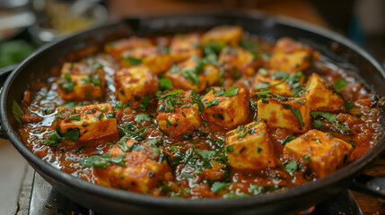

Kadhai Paneer

Description
Kadhai Paneer is a spicy and aromatic North Indian dish made with paneer,
capsicum, tomatoes, and special kadhai masala. It is perfect with roti or naan.
Ingredients
- Paneer cubes
- Capsicum (sliced)
- Tomatoes (pureed)
- Onions (sliced)
- Ginger-garlic paste
- Kadhai masala
- Red chili powder
- Coriander powder
- Coriander leaf
- Garam masala
- Oil
- Salt
Steps
- Heat oil and sauté onions and capsicum.
- Add ginger-garlic paste and cook until fragrant.
- Mix in tomato puree and spices, then cook until thick.
- Add paneer cubes and kadhai masala.
- Cook for 5 minutes and Spread coriander leaf then serve hot with roti or naan.
Home